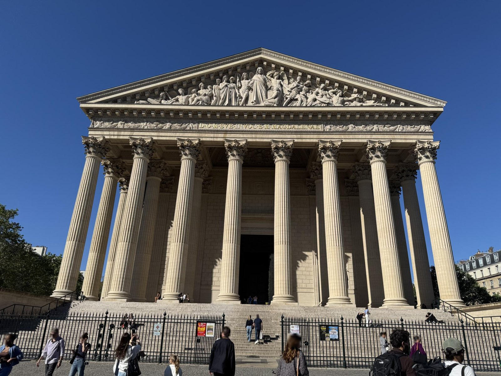

1845–60

Церковь освящена в 1842 году. Рисовальщик Филипп Бенуа ставит зрителя в юго-западный угол площади.
LoC 2016652452 · без известных ограниченийок. 1860

Эдуар Бальдюс снимает почти оттуда же — чуть западнее и ближе. Рисунок впервые можно проверить фотографией.
AIC 212069 · общественное достояниеок. 1895

Фотохром смотрит строго по оси улицы Руаяль: экипажи, велосипедисты, навесы магазинов.
LoC 2001698526 · без известных ограничений2026

Тот же портик сегодня. Точки Бенуа нет ни в одном обычном снимке — ваша очередь.
Panoramax · jerome92370 · CC BY-SA 4.0Охота за кадром: 48.8692, 2.3231 · смотреть на северо-восток (45°)